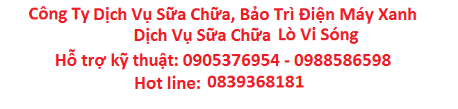
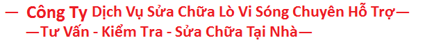

| tên dịch vụ-tình trạng | nội dung sửa chữa | phí sửa chữa | thời gian BH |
| sửa lỗi không nóng | thay tụ- vi sóng từ-sửa bo khiễn | thường 400-700k inveter 500-800k | 03-06 tháng tuỳ vào tình trạng-mưc độ sử dụng |
| sửa lỗi bàn phím | thay mạch bàn phím | thường 550-700k
inveter 650-800k |
03-06 tháng tuỳ vào tình trạng-mưc độ sử dụng |
| sửa lỗi mất nguồn | sửa bo nguồn | thường 550-700k
inveter 650-800k |
03-06 tháng tuỳ vào tình trạng-mưc độ sử dụng |
| sửa lỗi sẹt điện | thay lá chắn sóng-vi sóng | thường 350-700k
inveter 400-800k |
03-06 tháng tuỳ vào tình trạng-mưc độ sử dụng |
| dĩa lò vi sóng | sanyo-shap-lg-samsung VV… | 200-350.000đ Giao Tận Nhà |
Bảng Báo Giá Sửa Chữa – Vật Tư – Linh Kiện Lò Vi Sóng Xin Mời Quý Khách Tham Khảo:
Bảng giá sửa chữa và vật tư lò vi sóng trên mang tính tham khảo giá thực tế còn phụ thuộc:
- Hãng lò vi sóng (Sanyo, Sharp, Electrolux …)
- Loại lò vi sóng ( Inverter, thường, điều khiển cơ, điện tử…)
- Địa điểm sửa lò vi sóng ( gần trung tâm hoặc vùng ven)
- Thời gian sửa ( ngày thường, ngày chủ nhật, ngày lễ hoặc ngoài giờ …)
Dịch vụ sửa lò vi sóng tại nhà TPHCM, khắc phục triệt để các sự cố, có mặt ngay sau khi tiếp nhận yêu cầu của khách hàng. Với đội ngũ kỹ thuật viên cao tay nghề, làm việc lâu năm trong ngành sửa chữa lò vi sóng. Chế độ bảo hành dài hạn, hỗ trợ và tư vấn khách hàng qua tổng đài của công ty.
LIÊN HỆ TỔNG ĐÀI SỬA LÒ VI SÓNG TẠI NHÀ Hotline: 028.3860.0621 – 08.9814.2564
Trong nhiều năm liền sửa lò vi sóng cho khách hàng thuộc khu vực TPHCM, chúng tôi tự hào mang đến một dịch vụ tối ưu nhất tiết kiệm tối đa thời gian cũng như chi phí cho quý khách hàng, sửa chữa và khắc phục các lỗi thường gặp trên lò vi sóng như: lò vi sóng không nóng, lò vi sóng không hoạt động, lò vi sóng bị liệt phím bấm, lò vi sóng mất nguồn không vào điện, lò vi sóng bị hỏng mạch… và nhiều hư hỏng phức tạp khác.
Am hiểu và sửa thành thạo lò vi sóng thuộc nhiều thương hiệu khác nhau như lò vi sóng LG, lò vi sóng Samsung, lò vi sóng Bosch, lò vi sóng Sharp, lò vi sóng Panasonic, lò vi sóng Daewo….và nhiều thương hiệu khác.
*CAM KẾT VỚI KHÁCH HÀNG
Nhân viên kỹ thuật chuẩn đoán đúng bệnh, báo đúng giá theo quy định của công ty. Trường hợp quý khách hàng muốn tư vấn báo giá vui lòng liên hệ qua tổng đài 083.8600621-0948776521
Kỹ thuật viên thân thiện, trách nhiệm cao trong công việc, tay nghề thành thạo.
Chế độ bảo hành dài hạn, dán tem bảo hành ngay sau khi sửa chữa.
Sử dụng linh kiện chính hãng để thay thế ( trường hợp cần thay linh kiện )
*SỬA CHỮA TRIỆT ĐỂ CÁC HƯ HỎNG SAU
Sửa lò vi sóng không nóng
Sửa lò vi sóng không hoạt động
Sửa lò vi sóng bị đứt cầu chì
Sửa lò vi sóng không quay
Sửa lò vi sóng phát ra tia lửa điện
Sửa lò vi sóng bị lỗi mạch, bị hỏng mạch đồng hồ
Sửa lò vi sóng bị hỏng mạch cao tần
Sửa lò vi sóng bị liệt phím bấm
Sửa lò vi sóng hoạt động không hiệu quả
Thay cánh cửa lò vi sóng
Ngoài ra chúng tôi còn nhận sửa tất cả các loại lò nướng, lò viba, bán đĩa quay lò vi sóng tại khu vực TPHCM.
*QUY TRÌNH SỬA LÒ VI SÓNG TẠI TP. HCM
Tiếp nhận thông tin của khách hàng có nhu cầu sửa lò vi sóng qua tổng đài của công ty
Phân công kỹ thuật viên gần khu vực đến hỗ trợ khách hàng trong thời gian nhanh nhất
Kiễm tra thiết bị, chẩn đoán nguyên nhân hư hỏng -> báo giá theo quy định của công ty
Khách hàng đồng ý -> tiến hành sửa
Dán tem bảo hành ngay sau khi sửa chữa
Kiểm tra vận hành lò vi sóng trước khi bàn giao
Sau 3 ngày nhân viên chăm sóc khách hàng sẽ liên hệ lại quý khách để tiếp nhận thông tin phản hồi.
LÝ DO BẠN NÊN CHỌN ĐƠN VỊ UY TÍN:
Khi lò vi sóng hư hỏng, điều này khiến cho bạn mất nhiều thời gian trong việc chuẩn bị các món ăn, do đó chúng ta không thể mất thêm quá nhiều thời gian và giai đoạn trong việc sửa chữa thiết bị này. Công ty dịch vụ chúng tôi chuyên cung cấp dịch vụ sửa chữa lò vi sóng tại nhà là một giải pháp tối ưu nhất.
Khi hư hỏng trên lò vi sóng không được sửa chữa một cách triệt để, điều này khiến cho bạn cảm thấy phiền phức và tốn kém khá nhiều chi phí. Điều này thường xảy ra khi việc sửa lò vi sóng được giao cho các thợ mới ra nghề, chưa có kinh nghiệm hoặc các cửa hàng chưa có uy tín và chế độ bảo hành.
Quý khách sẽ được kiểm tra thiết bị và chuẩn đoán hư hỏng, Kỹ thuật viên sẽ báo giá sửa chữa và chi phí thay thế linh kiện ( nếu có ) theo quy định của công ty. Không hề có chi phí phát sinh hoặc báo giá sai, quý khách có thể an tâm nhận báo giá qua tổng đài của công ty.
Đối với những khách hàng bận rộn với công việc hàng ngày thì việc sửa chửa lò vi sóng trở nên dễ dàng hơn bất cứ lúc nào khách hàng có thời gian rảnh. Chỉ cần gọi trực tiếp vào Tổng đài 0283.860.0621 – 08.9814.2564 và hẹn lịch sửa chữa với kỹ thuật viên phù hợp với thời gian rảnh của khách hàng. Đội ngũ nhân viên kỹ thuật phục vụ khách hàng tất cả các ngày trong tuần 24/7.
Lưu ý:
- Nhân viên kỹ thuật không tự ý báo giá ngoài khung giá quy định trên website hoặc bản giá nội bộ đã được phê duyệt vì vậy quý khách có thể hoàn toàn tin tưởng. Trường hợp quý khách muốn xác nhận lại báo giá với công ty trước khi đồng ý, vui lòng gọi Tổng đài: 0283.8600621
- Đối với một số hư hỏng không thể tiến hành tại chỗ do thiếu dụng cụ, phụ tùng thay thế hoặc buột phải mang về trung tâm kiểm tra – xử lý. Quý khách kiểm tra thẻ nhân viên – nhân viên giao nhận hoặc sửa chữa sẽ lập phiếu biên nhận ghi rõ thời gian – có mộc công ty giao cho quý khách.